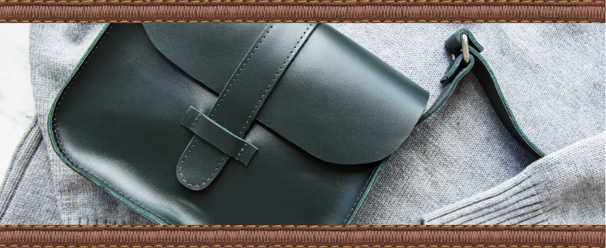
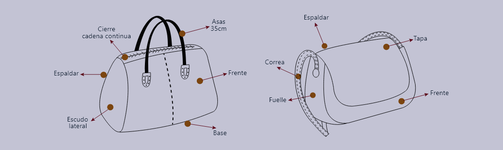
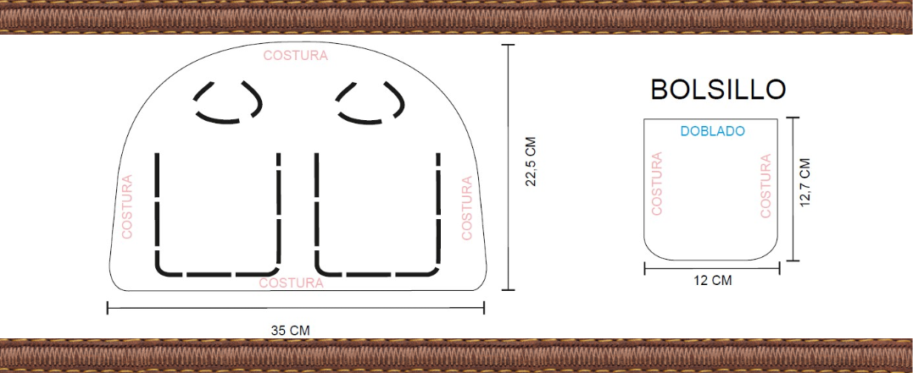
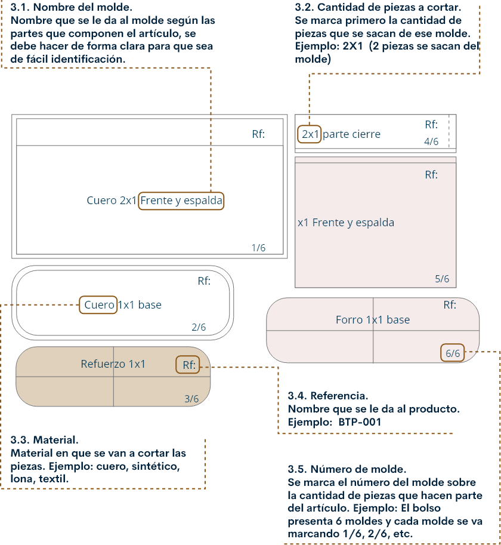
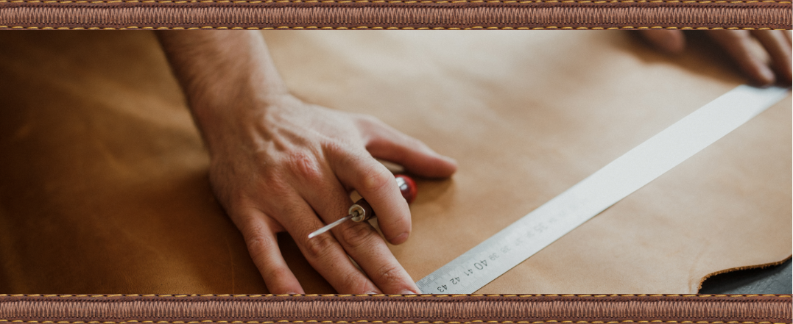

Introducción
Es el proceso en el cual se desarrollan los diferentes moldes para materializar un producto. En marroquinería los moldes se deben trabajar con trazos y medidas exactas para que el artículo sea acorde al diseño y estos se pueden realizar de manera digital o manual como se va a relatar en los contenidos formativos.
1. El molde patrón
Para iniciar con el desarrollo de los moldes es importante reconocer las partes que componen el producto.
El bolso presenta diferentes partes en su elaboración, éstas pueden ser visibles o no, según diseño.
1.1 Frente
Es la parte frontal del artículo, el corte de esta pieza se debe realizar sobre la mejor parte del material ya que es la que queda visible.
1.2 Espaldar
Es la pieza opuesta al frente, por lo general es quien queda contra el cuerpo del usuario.
1.3 Base
Pieza que queda debajo del producto, es poco visible por lo cual el corte de ésta se puede realizar en partes defectuosas de la piel.
1.4 Fuelle y/o escudo lateral
Son piezas que se ubican en sentido lateral del bolso. Generan el volumen del bolso dependiendo el diseño (no todos los bolsos presentan escudo lateral o fuelle).
1.5 Tapa
Pieza que se ubica en la parte superior del bolso y se une al espaldar de éste. El diseño del artículo es quien define si lleva o no tapa.
1.6 Porta cierre o falso interno
Pieza que lleva el cierre del bolso, por lo general se presenta en la parte superior del mismo.
1.7 Correa o manija
Permite agarrar el bolso. El largo y forma de ésta lo define el diseño del producto.
1.8 Forro
Es opcional dependiendo del diseño del artículo, éste puede ir suelto o adherido. Hace parte de las piezas internas del bolso las cuales no son visibles para el usuario.
1.9 Bolsillo interno
Es un compartimiento del bolso que es interno, permite guardar elementos de manera organizada brindando comodidad al usuario.
2. Medidas de aumento para elaboración de los moldes.
Dependiendo de la operación que se vaya a realizar para el ensamble del producto, es necesario tener en cuenta algunas medidas al elaborar los moldes. (Éstas pueden cambiar según el sistema de trabajo de la empresa).
2.1. Para recibir y montar.
El aumento a manejar en el molde es de 10mm. Éste se trabaja tanto para cueros, textiles y sintéticos.
2.2. Para doblar.
El aumento depende de si el material se dobla sobre un material rígido o si se dobla sobre sí mismo.
2.3. Para cuero.
8mm si se dobla sobre sí mismo o 10mm si se dobla sobre material rígido.
2.4. Para textil y sintético.
10mm si se dobla sobre sí mismo o 12mm si se dobla sobre material rígido.
2.5. Envivar.
El aumento depende del material. Para cuero se trabaja 5mm y para sintéticos o textiles: 10mm
2.6. Costuras pérdidas o internas.
El aumento depende del material. Para cuero se trabaja 8mm y para sintéticos o textiles: 10mm
2.7. Estos son los moldes.
Al final de la elaboración de todo el proceso lo moldes son puestos en orden para verlos de manera general de una forma a la que muestra la imagen.
3. Marcado e industrialización de los moldes.
La industrialización de los moldes se realiza marcando con información precisa cada uno de los moldes de forma que permita identificarlos y reconocerlos de manera rápida y eficiente. Cada patrón debe contener la siguiente información:
NOTA:
La industrialización mostrada anteriormente es la que se sugiere trabajar, sin embargo, ésta puede cambiar según el sistema de trabajo de la empresa.
4. Proceso para elaborar moldes de marroquinería.
Parafraseando a Gloria Cecilia Marulanda Cardona (2007) este es el proceso para elaborar moldes de marroquinería.
En la marroquinería los moldes tienen medidas y trazos muy precisos, de esto depende que el proceso de elaboración del producto hasta el final se ajuste exactamente al diseño.
Descripción del proceso técnico para la elaboración de moldes de bolsos, se recomienda seguir este paso a paso:
4.1 La toma de medidas.
Conocer las medidas exactas del producto al que se le van a elaborar los moldes.
4.2 Alistar la cartulina.
Se corta un trozo de cartulina con las medidas exactas que correspondan al producto más un aumento de 2 cm a cada uno de los lados. Esto con el fin de ir dando tamaño y forma al molde.
4.3 Dobleses.
Se recomienda doblar el molde mínimo en uno de sus centros de la siguiente forma:
Medida
Tomar la medida que corresponde a la mitad de lo que mide la cartulina, en las partes superior e inferior.
Encuadre
Colocar la escuadra entre los dos centros resultantes y realizar un corte muy suave (incisión) con la cuchilla.
Incisión
Doblar la cartulina por la incisión.
4.4 La toma de medidas.
Este paso consiste en dar ángulo recto a la cartulina en uno o en dos de sus lados. Se hace de la siguiente forma:
Encuadre
Colocar la escuadra donde tiene el ángulo recto, sobre la parte de la cartulina que está doblada.
Guía recta
Trazar una línea que es la que forma el ángulo recto con el doblez, por donde se debe cortar la cartulina, esto se debe hacer en la parte superior del molde y luego en la parte inferior.
4.5 Dobleces perpendiculares.
Algunos moldes requieren ser doblados también en línea perpendicular al primer doblez; si se requiere, se hace de la siguiente forma:
Parte superior
Después de encuadrar en la parte superior, se aplica la mitad de la medida del molde incluido el correspondiente aumento y en esa medida se marca un punto con el punzón que pase al lado opuesto de la cartulina.
Incisión
Realizar un corte muy suave (incisión) con la cuchilla que solo hiera el sustrato
Dobles
Doblar la cartulina por la incisión.
Corte
Cortar la cartulina sobrante para obtener la medida que corresponde a la altura del molde.
4.6 La medida final
La medida que hace falta para concluir el molde es el largo, para obtenerlo se debe doblar por la primera incisión y así aplicar en la parte superior y en la inferior la medida que requiera incluidos los aumentos.
4.7 Dibujar la línea de aumento
Después de realizados los pasos anteriores, al molde se le deben dibujar las líneas de aumento y escribirles el nombre según corresponda. Pueden ser utilizados diferentes tipos de medidas según se requiera, por ejemplo: doblar, recibir, montar, costuras pérdidas, envivar, ribete.
4.8 Marcación final
Es muy importante terminar de elaborar la moldería marcando los moldes con toda la información que ellos requieran, de la siguiente forma:
Patrón
Se marca siempre y cuando el molde sea el patrón.
Referencia
Puede ser alfanumérica, por ejemplo: solo números, solo letras, nombres propios, combinación números y letras.
Material y cantidad por cortar
Es importante diferenciar cada material con su nombre técnico y cuántas veces debe ser cortado. ejemplo: cuero 2x1. sintético 1x1. seda 4x1, donde el primer número indica la cantidad de piezas que deben ser cortadas con un rnismo molde y el segundo cuántos productos van a ser elaborados con esas piezas.
Nombre del molde
Es importante darle nombre al molde, ya que esto permite identificar cada una de las partes de la billetera o bolso.
Número del molde
Para llevar un consecutivo y un control de la moldería completa.
Glosario
Confección:“Confección, que tiene su origen en el vocablo latino confectio, es un término que refiere a la acción de preparar o hacer determinadas cosas a partir de una mezcla o de una combinación de otras. Es posible, en este sentido, confeccionar ropa, medicamentos, perfumes, etc” Pérez y Gardey (2014).
Enhebrar:Colocar una hebra por el ojo de una aguja de mano o de máquina.
Envivar:Pegar las piezas en vivo, se usa para dar ganancia al molde.
Material complementario
| Nombre del documento o material. | Tipo de material. | Enlace del Recurso. |
|---|---|---|
| Marulanda Gloria, (2007). Cartilla de marroquinería. Modelaje de bolsos. | Cartilla | ver |
Referencias bibliográficas
Marulanda, G. (2007). Cartilla de Marroquinería. Modelaje de bolsos SENA. https://repositorio.sena.edu.co/bitstream/11404/4866/1/cartilla_marroquineria_modelaje_bolsos.pdf
Perez, J. & Gardey, A. (2014). Definición de confección. https://definicion.de/confeccion/
Fotografías y vectores tomados de https://www.shutterstock.com/ y https://www.freepik.es/
Licencia Creative Commons
CC BY-NC-SA
Ver licencia.